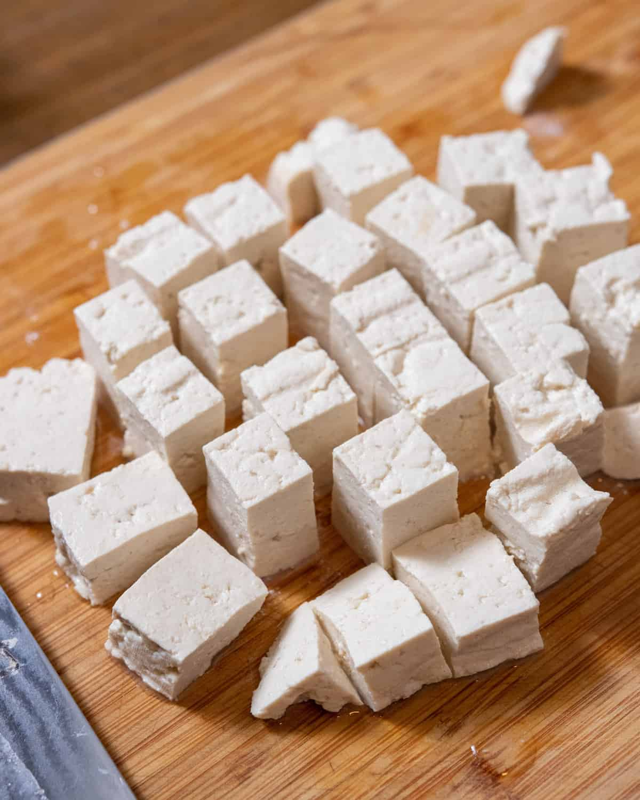

Tofu

Description
Tofu is a food prepared by coagulating soy milk and then pressing the resulting curds into solid white blocks of varying softness: silken, soft, firm, extra firm. Tofu is also known as bean curd in English.
Ingredients
Steps
Soak the dried soy beans.
Use the soaked beans to make homemade soy milk
Cook the raw soy milk, then strain out the soybean pulp.
Bring the soy milk back up to temperature, then add a coagulant to curdle the soymilk.
Transfer the soybean curds into a tofu mold and apply pressure to form your block of tofu.
Firm up the tofu in cool water, then its ready to enjoy!